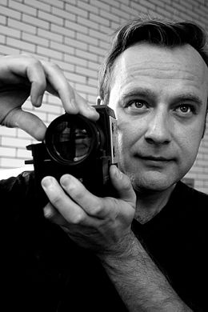

ABOUT JOHN BOROWSKI
John Borowski is an award winning independent filmmaker and author whose film works have garnered international acclaim and are distributed internationally on dvd, television, and streaming. Borowski’s “historical horror” trilogy of documentary films focus on late nineteenth and early twentieth century serial killers.
After receiving his B.A. from Columbia College Chicago’s film program, Borowski freelanced as an editor and cinematographer. Director Willy Laszlo chose Borowski to edit every headlining film for the Chicago Short Comedy Film and Video Festival from 1999 to 2003. In 2004, Borowski’s independently produced first film, H.H. Holmes: America’s First Serial Killer, was distributed on DVD in North America by Facets Video. For the voice of the narrator, Borowski chose Tony Jay, the voice of villain Judge Claude Frollo in Disney’s Hunchback of Notre Dame. Holmes was awarded with numerous awards including Best Director of The Midwest independent Film Festival and Best Documentary for Screamfest and was also broadcast on Court TV Canada.
Holmes received an unprecedented amount of press, being covered by television (CBS News, Wild Chicago), print (Variety, LA Weekly, Chicago Sun-Times, Ain't It Cool News, Philadelphia Weekly, Chicago Magazine), and radio (Mancow Show, Deadpit Radio). The historical interest in Holmes was reflected in the lectures Borowski delivered to The Chicago Historical Society, Indiana State University, and St. Xavier University. The Strange Case of Dr. H.H. Holmes is an illustrated book published by Borowski containing three primary source books about the Holmes case and Holmes’ complete confession. H.H. Holmes has been distributed to over a dozen countries worldwide.
After disappearing for over 25 years, Dennis Rader, the BTK Murderer, resurfaced in 2004 after sending letters to the Wichita Press. The Wichita Police Department contacted Borowski to aid in their investigation by subpoenaing the names of people in Wichita who ordered the Holmes DVD. BTK was familiar with other serial killers and had mentioned H.H. Holmes in his writings, therefore the authorities were covering all bases by investigating any potential suspects who may have purchased a Holmes DVD. Dennis Rader, the BTK murderer was apprehended in February of 2005.
Borowski relocated to Los Angeles in 2005 for four years where he produced his second film, Albert Fish: In Sin He Found Salvation, which has been called “one of the most disturbing films ever made.” For Fish, Borowski interviewed artist Joe Coleman and had a tour of his famous Odditorium in Brooklyn, NY. Also in 2005, Borowski served as Associate Producer on the British television documentary production, Murder Hotel.
Albert Fish was released on DVD in 2007 and the world premiere screening was held at the historic Vine Theater in Hollywood. At the New York Screening, Borowski met the Italian distributor for Gargoyle Video who agreed to distribute Fish in Italy. The BTK murder case resurfaced again in Borowski ’s life when he became assistant editor on the documentary film, I Survived BTK. Borowski’s worldwide filmmaking appeal burgeoned with screenings of HH Holmes and Albert Fish in foreign countries such as Greece, Denmark, United Kingdom, Italy, and Canada. Holmes and Fish were also featured in the Australian book, Celluloid Serial Killers (2007).
Borowski relocated back to Chicago in 2009. Always embracing cutting edge technology, Borowski ensured his films were available to the internet/streaming audience. In 2009, Netflix began streaming Holmes and Fish. Releases of the films on Itunes, Amazon, and Hulu followed immediately after. Borowski directed his first ever book trailer for John Everson’s, The 13th, published by Leisure Books.
The worldwide appeal of Borowski’s fanbase was reflected in numerous projects in 2010 including being featured in the books, Murderabilia and True Crime Collecting (Published in the U.K.), and The Documentary Moviemaking Course. Also in 2010, Borowski was the associate producer on Chilean filmmaker Patricio Valladares’ feature film, Toro Loco.
In 2011, Borowski attended The Crime Scene, a true crime performance event, where he received a letter from serial killer Keith Jesperson asking Borowski to create a film on his life. The Swedish Band, Sparzanza, utilized Tony Jay’s narration audio from Albert Fish for their song, Mr Fish. Borowski also directed the music video of Mr. Fish, which many Sparzanza fans have called their favorite music video.
Carl Panzram: The Spirit of Hatred and Vengeance, Borowski’s third feature documentary film, was released on DVD October 23, 2012 and is now also available for streaming worldwide at the official film site. The film features John DiMaggio (Bender from Fox’s Futurama) as the voice of lifelong criminal and murderer Carl Panzram. For the film, Borowski underwent a process of unprecedented research which included filming at the maximum security prisons of Leavenworth Penitentiary and Clinton Correction Facility as well as filming Panzram’s handwritten autobiographical papers at San Diego State University. Panzram was awarded the director's choice award at the 2012 Chciago Horror Film Festival.
The popularity of Borowski’s films reached an all time high in 2012. In April and October, HH Holmes aired on PBS and Borowski was the special guest on PBS' pledge drive. Bojan Pandža,
Serbian author and film critic had this to say: "There are four horsemen of the Apocalypse, Herzog, Eroll, Les Blank and John Borowski. HONESTLY!!!"
In 2013, Borowski's films were screened in Paris France, he was featured in Psychology Today, U.K.'s Bizarre Magazine, interviewed for the Travel Channel show Monumental Mysteries,
served as an official judge in the documentary category for the Housecore Horror Film Festival, completed Mime Time a short film entered into the ABC's of Death 2 competition and
completed his fourth feature documentary film, Serial Killer Culture, released in 2014.
In 2016, Borowski released The Ed Gein File, a book containing documents from the Gein case. Serial Killer Culture TV was released in March of 2017 as a follow up to the successful film, Serial Killer Culture. Dahmer's Confession, Borowski's fourth book, was released in October of 2017. 2018 Marks the release of Borowski's fifth feature documentary film, Bloodlines: The Art and Life of Vincent Castiglia. Borowski is currently busy writing several feature narrative film screenplays, writing his next book, Panzram at Leavenworth, producing the second season of SKCTV and producing his next serial killer biography documentary film, Jesse Pomeroy: The Boston Boy Fiend.
Borowski currently resides in his hometown of Chicago.


website powered by